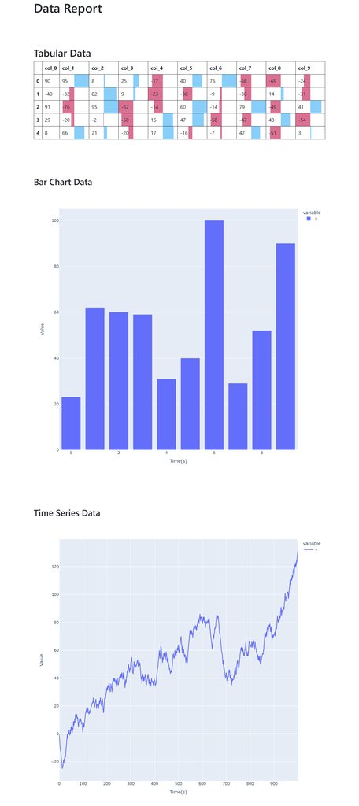

Someone said: the best way to write a blog is not just describe waht you did, but how you resolve a problem, to record how do you think about that at that moment.
I agree with this.
Background & Requirements Definination
We often need to generate some data reports, a typical senario is we got some data, and we want to generate a single page data report, so in this blog I will describe how to generate single page HTML data report using open source library Plotly in python.
Requirements Clearify:
- the input is processed data, as an example, we assume that it is a combination of tabular data, time series data and barchart data;
- we should generate charts one-by-one for each data source, and put them all into a single HTML file;
- this is a tool component, we need to integrate it with other software, wo make the integration easier, make it self-contained is a good choice, that means the output file can be accessed in offline environment.
Implementation
Write the Interface and Testcase First
TDD( Test Driven Developing ) is always a good practice in software developing, according to the TDD work flow, we should write the interface and test case first.
First, let’s build the project structure like this:
.
├── Makefile
├── plotly_offline_report
│ ├── gen_report.py
│ ├── __init__.py
└── tests
├── __init__.py
└── test_gen_report.pyIn gen_report.py, we define the structure ReportData as the source data of the report, and the function gen_report() to finish the report generating, we are not planning to implement it in this stage, so the function body is empty.
class ReportData:
tabular_data = None
time_series_data = []
bar_chart_data = []
class ReportGenerator:
def __init__(self, report_data, report_filename):
self._report_data = report_data
self._report_filename = report_filename
def gen_report_file(self):
passIn test_gen_report.py, we implement the GenReport Testcase, the testcase described what we need to do is get the report data and call the gen_report() function on the report data to geneate a report file. The report file will be stored in the TMP_DIR, and we can use python3 -m http.server --directory /tmp/plotly_gen_report/ to start a webserver on the directory, so we can easily open browser to check if it fullfilled our requirments mannually, TDD workflow makes the dev-test loop faster and accelerates the development.
import unittest
import tempfile
import os
import random
from plotly_offline_report.gen_report import ReportGenerator, ReportData
TMP_DIR = "/tmp/plotly_gen_report"
class TestGenReport(unittest.TestCase):
def setUp(self) -> None:
if not (os.path.exists(TMP_DIR) and os.path.isdir(TMP_DIR)):
os.mkdir(TMP_DIR)
def test_gen_report(self):
report_data = ReportData()
report_data.tabular_data = [["test_header" for i in range(10)]]
report_data.tabular_data.extend(
[[random.randint(1, 100) for i in range(10)] for j in range(5)]
)
report_data.bar_chart_data = [(i, random.randint(1, 100)) for i in range(10)]
report_data.time_series_data = [random.randint(1, 100) for i in range(1000)]
test_report_file = tempfile.NamedTemporaryFile(
dir=TMP_DIR, delete=False, suffix=".html"
)
ReportGenerator(report_data, test_report_file.name)
if __name__ == "__main__":
unittest.main()In Makefile, we defined the test step and clean up step of the project.
.PHONY: test
test:
python3 -m unittest tests/test_gen_report.py
.PHONY: clean
clean:
rm -rf /tmp/plotly_gen_reportImplement the Core Function
To make the post more clear, I will just put some code snipets to demostrate the core structure of the implementation, full version of code can be accessed at github repo:
https://github.com/XiGou/plotly_gen_offline_report
In ReportGenerator class, we use 3 functions to plot the figure or table by plotly and pandas library, and got the HTML string, and use gen_report_html_str() to compose them all and filled into _report_html_template and got the final html string. At lase we write it into an HTML file.
from plotly.offline.offline import get_plotlyjs
import pkgutil
import pandas as pd
import plotly.express as px
class ReportData:
tabular_data = None # [["header"], [1]]
time_series_data = [] # [{"timestamp":1, "value": 1}]
bar_chart_data = [] # [{"value":1, "count": 1}]
PKG_NAME = "plotly_offline_report"
class ReportGenerator:
_report_html_template = """
# defined the basic html wrapper to display the report
"""
def __init__(self, report_data, report_filename):
self._report_data: ReportData = report_data
self._report_filename = report_filename
self._report_sections = []
def _gen_report_html_str_for_ts_data(self):
data = self._report_data.time_series_data
# plot line figure using plotly
return f"""
<h3> Time Series Data </h3>
{fig.to_html(full_html=False, include_plotlyjs=False)}
"""
def _gen_report_html_str_for_barchart_data(self):
data = self._report_data.bar_chart_data
data.sort(key=lambda x: x["value"])
# plot barchart using plotly
return f"""
<h3> Bar Chart Data </h3>
{fig.to_html(full_html=False, include_plotlyjs=False)}
"""
def _gen_report_html_str_for_tabular_data(self):
data = self._report_data.tabular_data
# compose the pandas dataframe
return f"""
<h2> Tabular Data </h2>
{df_stylers.to_html()}
"""
def gen_report_html_str(self):
...
def gen_report_file(self):
with open(self._report_filename, "w", encoding="utf-8") as f:
f.write(self.gen_report_html_str())Make It Self-contained
The key point of this project is to make the report self-contained, so it can be opened in enviroment without internet.
In the function call to_html(full_html=False, include_plotlyjs=False) of plotly, we set full_html=False to generate just an html div instead of a complete HTML file include the hearder and body. we set include_plotlyjs=False because we need to include multple figure in one report HTML, we don’t want it to appear multiple time in one page, and each plotly js script make our file few MBs bigger.
the implementation of gen_report_html_str() is below, we make the bootstrap and plotly js/css as static assets of our project, we use bootstrap here to build a grid layout and make our page looks better, and we include these contents directly into the _report_html_template then we got a full version of our report.
def gen_report_html_str(self):
self._report_sections = [
self._gen_report_html_str_for_tabular_data(),
self._gen_report_html_str_for_barchart_data(),
self._gen_report_html_str_for_ts_data(),
]
plotlyjs_script = f"""
{self._window_plotly_config}
<script type="text/javascript">{get_plotlyjs()}</script>
"""
bootstrapjs = f"""<script>{pkgutil.get_data(f"{PKG_NAME}.assets", "bootstrap.bundle.min.js").decode("utf-8")}</script>"""
bootstrapcss = f"""<style>{pkgutil.get_data(f"{PKG_NAME}.assets", "bootstrap.min.css").decode("utf-8")}</style>"""
return self._report_html_template.format(
report_sections=self._compose_report_sections(),
style=bootstrapcss,
scripts=f"{plotlyjs_script}\n{bootstrapjs}",
)Glimpse of The Report Page
It looks morden, elegant, and it is interative.
